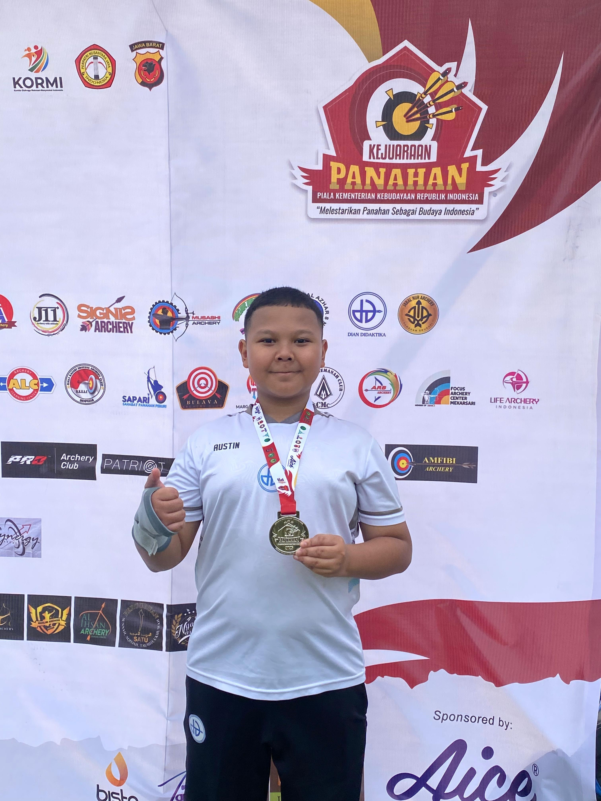

Mama&Papa, perkenalkan ini Bu Hillya Wali Kelas. perkenalkan ini orang tua saya. Pada kesempatan ini, saya Austin Rafif Kurniyanto mau melaporkan hasil belajar saya di kelas 9B di SMP Islam Dian Didaktika.
"Risk comes from not knowing what you're doing." — Warren Buffett

Austin Rafif Kurniyanto
Kelas IX - SMP Islam Dian Didaktika
Kejuaraan Panahan
Refleksi suasana dan momen berkesan selama pembelajaran.
Selama belajar di kelas IX, saya merasa semakin tertantang dan bersemangat untuk memahami materi-materi baru.
Lingkungan belajar di kelas sangt tenang,saling bantu dan saling diskusi
Momen paling asyik adalah saat lomba 17 agustusan karena saya menang juara 1.
Laporan peran, persiapan, dan pengalaman dalam acara Dhiporia.
saya tidak membuat atau memegang konsep tetapi persiapan yang saya lakukan adalah Presentasi Ke perusahaan.
saya berkontribusi mencari dana dan presentasi ke prusahaan, pembelajaran yang bisa di ambil adalah cara presentasi yang benar saling tukar pikiran dan mendapatkan banyak kepercayaan
Komitmen perbaikan diri dan target di Semester 1.
Ringkasan literasi dan buku yang telah dibaca.
Henry Manampiring
"Filosofi Teras" mengajarkan cara mengatasi stres dan kecemasan modern menggunakan Stoisisme (Filsafat Stoa). Intinya: penderitaan muncul bukan karena masalahnya, melainkan dari cara kita menilai masalah tersebut..
Laporan pencapaian akademik dan area peningkatan.
Dua pelajaran dengan nilai tertinggi ada di pelajaran Informatika dan Ips karena saya sangat menyukai materi dan berdisskusi.
Pelajaran yang perlu ditingkatkan adalah Bahasa Arab karena membutuhkan lebih banyak latihan soal dan ketelitian .
"Tetap semangat, jangan cepat puas dengan hasil yang dicapai, dan selalu berusaha menjadi pribadi yang lebih baik setiap harinya!"